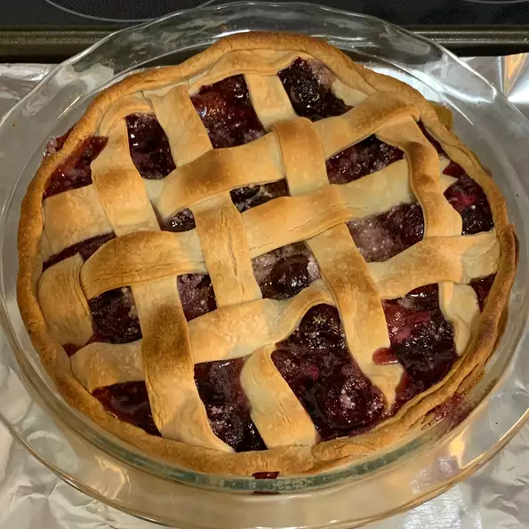

Baked Fresh Cherry Pie

Description
YUMMY--uses fresh cherries!
Ingredients
- 1 recipe pastry for a 9 inch double crust pie
- 4 tablespoons quick-cooking tapioca
- ⅛ teaspoon salt
- 1 cup white sugar
- 4 cups pitted cherries
- ¼ teaspoon almond extract
- ½ teaspoon vanilla extract
- 1 ½ tablespoons butter
Steps
- Preheat oven to 400 degrees F (205 degrees C).
- Place bottom crust in pie pan. Set top crust aside, covered.
- In a large mixing bowl combine tapioca, salt, sugar, cherries, and extracts. Let stand 15 minutes
- Turn out into bottom crust and dot with butter. Cover with top crust, flute edges and cut vents in top. Place pie on a foil-lined cookie sheet--in case of drips!
- Bake for 50 minutes in the preheated oven, until golden brown. Let cool for several hours before slicing.